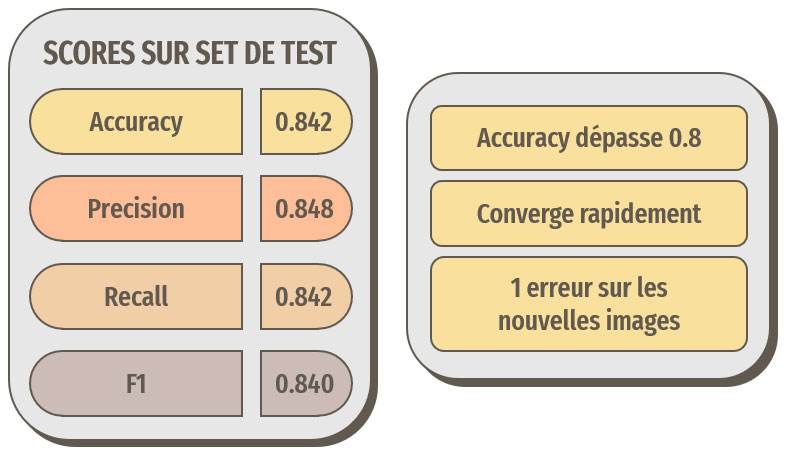
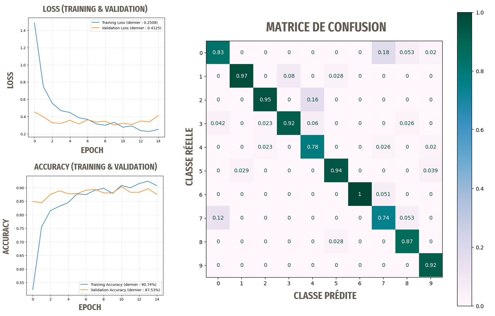

Introduction
Ce projet a pour but de créer une application qui permet de détecter la race d'un chien sur une photo.
Pour y parvenir, nous allons utiliser des algorithmes de deep learning.
Nous allons baser notre travail sur le Stanford Dogs Dataset qui contient plus de 20 000 photos de chiens
réparties en 120 classes (races de chien). Ce dataset a été élaboré à partir de photos et leur annotation provenant d'ImageNet,
dont le contenu est utilisable gratuitement dans le cadre d'une utilisation non commerciale, ce qui est le cas ici.
Dans le cadre de ce projet, pour des raisons matérielles, nous n'utiliserons pas l'ensemble des classes du dataset. L'objectif est pour le moment de tester la faisabilité de l'application.
Les objectifs du projet sont les suivants :
- Rapidement explorer les données et prétraiter les images.
- Entraîner complètement un réseau de neurones.
- Entraîner partiellement un réseau de neurones en utilisant le transfer learning.
- Créer une application de prédiction.
- Préparation des images.
- Approche 1 : création et entraînement d'un réseau de neurones avec TensorFlow.
- Approche 2 : test de la technique du transfer learning avec trois réseaux préentraînés.
- Création de l'application avec Streamlit.
Retrouvez tout le code de ce projet sur mon GitHub
Chargement et découverte du dataset
Chargement des images
Les images de notre dataset sont réparties dans des dossiers pour chaque classe, nous allons les parcourir
et charger les images avec la bibliothèque Pillow.
import os # Manipulations de fichiers
import copy # Utilisé pour importer un grand nombre de fichiers
from PIL import Image # Importation des images
# Récupération des noms des dossiers (qui représentent les noms des labels)
# [len(path):] pour ne récupérer que les noms des dossiers, sans le chemin
list_labels = [os.path.dirname(dossier)[len(path):] for dossier in data_path]
# Récupération des noms des fichiers pour la gestion des doublons
# et la sauvegarde à la fin de nos traitements
file_names = [os.path.basename(dossier) for dossier in data_path]
# Ouverture des images avec PIL.image
# L'utilisation de copy.deepcopy() permet d'éviter les erreurs
# lors de l'ouverture d'un grand nombre de fichiers avec Image.open()
img_pil = [copy.deepcopy(Image.open(ligne)) for ligne in data_path]
Pour commencer, nous devons vérifier si les classes de notre dataset ne sont pas trop déséquilibrées.
Occurrences des classes
Pour plus de lisibilité, seules 60 classes ont été représentées ici.
Les classes ne sont pas trop déséquilibrées, avec toujours plus de 100 individus par classe.
Le nombre d'images pour chaque classe n'étant pas très élevé, nous pourrons envisager d'inclure une étape de data augmentation lors de l'entraînement de nos modèles.
Gestion des doublons :
Des doublons sont présents dans ce dataset : au sein de mêmes classes, mais aussi entre certaines classes. Tout d'abord, ceci va introduire un biais au moment de passer les images dans nos modèles,
surtout avec les doublons interclasse. De plus, la présence de ces doublons peut créer des erreurs au moment de la réalisation des prétraitements, comme pour la ZCA Whitening. Ces doublons doivent donc être supprimés.
Pour supprimer les doublons, je me base sur la taille des fichiers. La probabilité que deux fichiers JPG représentant des choses différentes aient une taille identique à l'octet près étant faible,
je juge la quantité d'images non doublonnées potentiellement perdues comme acceptable.
Suppression des doublons
avec_doublon = len(img_pil)
# Créer un dictionnaire pour stocker les indices uniques par taille de fichier
unique_indices_dict = {}
# Remplir le dictionnaire avec les indices des images pour chaque classe
for i, file_name in enumerate(file_names):
# Obtenir la taille du fichier
file_size = os.path.getsize(data_path[i])
# Utiliser une clé unique basée sur la taille du fichier
key = (file_size)
# Si la clé n'existe pas dans le dictionnaire, ajouter l'indice
if key not in unique_indices_dict:
unique_indices_dict[key] = i
# Utiliser les indices pour obtenir l'ensemble de données sans doublons
unique_indices = list(unique_indices_dict.values())
data_without_duplicates = [img_pil[i] for i in unique_indices]
list_labels_without_duplicates = [list_labels[i] for i in unique_indices]
file_names_without_duplicates = [file_names[i] for i in unique_indices]
# On réaffecte nos données sans doublons aux variables
img_pil = data_without_duplicates
list_labels = list_labels_without_duplicates
file_names = file_names_without_duplicates
print(f"{avec_doublon - len(img_pil)} doublons ont été supprimés.")
Dimensions des images
Il n'y a pas trop de variations dans la taille des images.
Prétraitements de base
Nous allons commencer par des prétraitements de base sur nos images.
Exemple d'image avant les traitements
Redimensionnement
Les modèles de deep learning que nous allons utiliser attendent en entrée des images carrées.
Débruitage
Le bruit sur les images peut perturber les modèles.
Égalisation
Une étape de contraste automatique (autocontrast() de la bibliothèque Pillow), qui s'applique donc seulement en cas de besoin, termine nos traitements de base.
ZCA Whitening
La ZCA (Zero Component Analysis) whitening est basée sur la PCA (Principal Component Analysis) whitening. Avec la ZCA whitening, la dernière étape comporte une multiplication de matrice supplémentaire
avec la matrice de valeurs propres. Cette technique permet de mieux conserver la structure des données que la PCA whitening, mais est plus coûteuse en termes de calculs.
Avec cette technique les images transformées ressemblent plus aux images originales.
Plus d'informations à ce sujet ici.
Le module ImageDataGenerator de Keras possède une implémentation de la ZCA whitening.
Remarque :
Cette technique est coûteuse en ressources, notamment en mémoire vive.
En effet, la matrice de corrélation qui va être créée lors du processus aura pour dimension hauteur × largeur × canaux des images,
ce qui peut vite donner des dimensions très grandes en fonction de la taille des images. Pour cette raison, les images vont être redimensionnées en 100x100 pour ce traitement.
Récapitulatif du traitement et exemples d'images traitées
Approche 1 : création et entraînement d'un réseau de neurones avec TensorFlow
Nous allons nous baser sur l'architecture de VGG16, que l'on peut retrouver ici.
Nous allons limiter nos expérimentations sur 10 classes. Voici une fonction nous permettant de créer un tel modèle avec TensorFlow :
def create_model_base() :
# Taille des images en entrée
# On reprend bien la taille qu'on avait spécifiée
# lors de la création de nos datasets
input_shape = (224, 224, 3)
# Structure du modèle
model = Sequential([
# BLOC 1
Conv2D(64, kernel_size=(3, 3), padding='same', activation='relu', input_shape=input_shape, name='block1_conv1'),
Conv2D(64, kernel_size=(3, 3), padding='same', activation='relu', name='block1_conv2'),
MaxPooling2D(pool_size=(2, 2), strides=(2, 2), name='block1_pool'),
# BLOC 2
Conv2D(128, kernel_size=(3, 3), padding='same', activation='relu', name='block2_conv1'),
Conv2D(128, kernel_size=(3, 3), padding='same', activation='relu', name='block2_conv2'),
MaxPooling2D(pool_size=(2, 2), strides=(2, 2), name='block2_pool'),
# BLOC 3
Conv2D(256, kernel_size=(3, 3), padding='same', activation='relu', name='block3_conv1'),
Conv2D(256, kernel_size=(3, 3), padding='same', activation='relu', name='block3_conv2'),
Conv2D(256, kernel_size=(3, 3), padding='same', activation='relu', name='block3_conv3'),
MaxPooling2D(pool_size=(2, 2), strides=(2, 2), name='block3_pool'),
# BLOC 4
Conv2D(512, kernel_size=(3, 3), padding='same', activation='relu', name='block4_conv1'),
Conv2D(512, kernel_size=(3, 3), padding='same', activation='relu', name='block4_conv2'),
Conv2D(512, kernel_size=(3, 3), padding='same', activation='relu', name='block4_conv3'),
MaxPooling2D(pool_size=(2, 2), strides=(2, 2), name='block4_pool'),
# BLOC 5
Conv2D(512, kernel_size=(3, 3), padding='same', activation='relu', name='block5_conv1'),
Conv2D(512, kernel_size=(3, 3), padding='same', activation='relu', name='block5_conv2'),
Conv2D(512, kernel_size=(3, 3), padding='same', activation='relu', name='block5_conv3'),
MaxPooling2D(pool_size=(2, 2), strides=(2, 2), name='block5_pool'),
# Bloc de classification
Flatten(name='flatten'),
Dense(4096, activation='relu', name='fc1'),
Dense(4096, activation='relu', name='fc2'),
Dense(nb_classes, activation='softmax', name='predictions')
# nb_classes : nombre de classes, nous nous limiterons ici à 10
], name='Base')
# Compilation du modèle
model.compile(loss="categorical_crossentropy", optimizer='adam', metrics=["accuracy"])
# Affichage de la structure du modèle
print(model.summary())
return model
Structure de notre premier modèle
Lors de l'entraînement d'un tel modèle, notre dataset doit être divisé en trois parties :
- Train : pour l'entraînement à proprement parler.
- Validation : au cours de l'entraînement, le modèle va être testé, sur une métrique choisie, via la création d'un callback et les poids seront enregistrés en cas d'amélioration. L'entraînement pourra être interrompu si les performances n'évoluent plus.
- Test : une fois l'entraînement terminé, le modèle sera testé sur cette portion de dataset, qu'il n'aura donc jamais vu. Les performances seront évaluées à l'aide de différentes métriques.
Segmentation du dataset et métriques utilisées
Résultats pour ce premier modèle
Les résultats ne sont pas du tout satisfaisants, le modèle n'apprend pas.
Comme évoqué précédemment, les classes possèdent un nombre assez faible de représentants. Pour tenter de pallier ceci, nous allons ajouter une étape
de data augmentation à notre modèle qui appliquera différentes modifications de manière aléatoire à nos images au cours des cycles d'entraînement.
Ceci a pour but d'introduire artificiellement plus de variabilité dans nos données d'entraînement.
Ajout d'une étape de data augmentation
Les différentes modifications s'appliquent aléatoirement aux images au cours des cycles d'entraînement du modèle.
Résultats pour le modèle avec data augmentation
La data augmentation n'a pas permis ici d'améliorer les résultats, le modèle n'apprend toujours pas.
Nous allons maintenant modifier les hyperparamètres de notre modèle pour tenter d'améliorer au maximum les résultats.
Après différents tests, les meilleurs résultats ont été obtenus avec ces modifications :
Récapitulatif des modifications apportées au modèle
La fonction LeakyReLU
Contrairement à ReLU, LeakyReLU laisse légèrement passer les valeurs négatives
Résultats pour le modèle optimisé
Les optimisations ont permis ici d'améliorer les résultats, les prédictions sont meilleures que des prédictions aléatoires, le modèle a donc appris.
Remarque : les meilleurs résultats ont été obtenus en nous basant sur les images avec les traitements de base, donc sans le ZCA Whitening.
Cependant, 30 % d'accuracy n'est clairement pas suffisant pour notre idée d'application de reconnaissance de races de chien.
Nous allons donc passer à l'approche suivante pour tenter de résoudre notre problématique.
Approche 2 : technique du transfer learning
L'approche consistant à entraîner complètement un réseau de neurones ne donnant pas de bons résultats avec notre dataset, nous allons essayer des techniques de transfer learning pour voir si nous pouvons obtenir de meilleures performances.
Nous continuerons à baser nos entraînements sur notre dataset Stanford Dogs Dataset.
Comme précédemment, afin de limiter les temps de calculs, bien qu'accélérés grâce à une carte graphique, nous ne baserons nos expérimentations que sur 10 classes.
En quoi consiste le transfer learning ?
Nous allons utiliser des modèles de réseaux de neurones déjà entraînés sur des données similaires, en l'occurrence ici : des images.
Ces modèles ont été entraînés sur de très grandes quantités de données. Ce qui va nous intéresser ici est de récupérer ce que ces modèles ont appris
concernant tout un ensemble de caractéristiques génériques, comme par exemple les bords, les coins, les contours, les surfaces, certains motifs, etc.
Nous allons ensuite réentraîner uniquement les dernières couches de ces modèles sur notre problématique, à savoir la classification de races de chiens.
Seules les dernières couches des modèles seront réentraînées.
Trois modèles vont être testés avec cette approche :
- VGG16 : 16 couches (Univ. Oxford, 2014)
- ResNet50 : 50 couches (Microsoft, 2015)
- InceptionV3 : 48 couches (Google, 2016)
Point de vigilance :
Notre dataset de travail, le Stanford Dogs Dataset, a été constitué à partir d'images provenant d'ImageNet, ce qui implique que notre set de test utilisé pour évaluer notre modèle contiendra des images qui auront déjà été vues par les modèles préentraînés. Ceci peut donc créer un biais qu'il faudra considérer. Il faudra donc prendre soin de tester également notre modèle sur quelques images ne provenant pas d'ImageNet, donc totalement inconnues.
Résultats avec le transfer learning basé sur VGG16

Le terme « nouvelles images » signifie ici : ne provenant pas d'ImageNet
Les résultats sont très bons, rien à voir avec notre première approche !
Résultats avec le transfer learning basé sur ResNet50

Le terme « nouvelles images » signifie ici : ne provenant pas d'ImageNet
Les résultats sont encore meilleurs. Les performances sont suffisantes pour notre idée d'application de reconnaissance.
Testons maintenant le troisième modèle.
Résultats avec le transfer learning basé sur InceptionV3
Le terme « nouvelles images » signifie ici : ne provenant pas d'ImageNet
Les résultats sont proches de la perfection. C'est le modèle que nous retiendrons pour notre application.
Remarque : ces résultats ont pu être obtenus en nous basant sur les images sans prétraitement, hormis le redimensionnement requis en entrée des modèles.
Ce qui simplifiera l'étape de conception de notre application.
Les avantages du transfer learning :
- Durées d'entraînement plus courtes : moins de couches à entraîner.
- Des performances très élevées : bien supérieures à notre première approche.
- Pas besoin de prétraitement des images : il suffit de redimensionner les images avant d'obtenir nos prédictions.
Création de l'application avec Streamlit
Maintenant que nous avons un modèle performant, nous allons pouvoir créer notre application. Nous allons utiliser Streamlit,
une bibliothèque open-source en Python conçue pour créer facilement des applications web interactives et conviviales.
Quelques lignes de code nous suffiront pour créer notre application :
# On commence par importer streamlit
import streamlit as st
# Titre de la page (onglet)
st.set_page_config(page_title="Dog detector")
# Titre
st.title("Détecteur de race de chien")
################################
# CHARGEMENT DES BIBLIOTHEQUES #
################################
# st.spinner : pour afficher un message durant l'exécution d'un bloc de code
with st.spinner('⏳ Chargement des bibliothèques, veuillez patienter...'):
import numpy as np # Manipulation d'arrays et utilisation de np.argmax
from tensorflow.keras.models import Sequential
from tensorflow.keras.layers import GlobalAveragePooling2D, Dense, Dropout, Rescaling
# Modèle préentraîné InceptionV3
from tensorflow.keras.applications.inception_v3 import InceptionV3
from tensorflow.keras.preprocessing.image import load_img, img_to_array
###########
# CLASSES #
###########
# Classes sur lesquelles avait été entraîné notre modèle
class_names = [
"n02085620-Chihuahua",
"n02085782-Japanese Spaniel",
"n02085936-Maltese Dog",
"n02086079-Pekinese",
"n02086240-Shih-Tzu",
"n02086646-Blenheim Spaniel",
"n02086910-Papillon",
"n02087046-Toy Terrier",
"n02087394-Rhodesian Ridgeback",
"n02088094-Afghan Hound",
]
# Création d'un string pour affichier
# les classes sur la page de l'app
race_connues_string = "Les races connues par le modèle sont les suivantes :\n\n"
for i in class_names:
race_connues_string += f"- {i[10:]}\n" # [10:] pour masquer le code de classe
######################
# CREATION DU MODELE #
######################
@st.cache_resource(show_spinner=False) # Mettre en cache cette fonction pour réexécution plus rapide
def model_creator():
txt_creation = "üõ†Ô∏è Initialisation du modèle, veuillez patienter..."
model_bar = st.progress(0, text=txt_creation) # Création d'une barre de progression
# Création et compilation du modèle
# sans GPU, pour un fonctionnement universel
# Récupération du modèle pré-entraîné
model_base = InceptionV3(include_top=False,
# On ne prend pas les dernières couches, que l'on va adapter à notre problématique
weights="imagenet",
input_shape=(299, 299, 3)
# Format d'entrée par défaut pour ce modèle
)
model_bar.progress(20, text=txt_creation) # Avancée de la barre de progression
# On fige les couches du modèle préentraîné
# les poids ne seront pas modifiés
for layer in model_base.layers:
layer.trainable = False
model_bar.progress(30, text=txt_creation) # Avancée de la barre de progression
# Définition du nouveau modèle
model_incep = Sequential([Rescaling(1./127.5, offset=-1, input_shape=(299, 299, 3)),
# Pour ce modèle, rescaler les images augmente énormément les performances.
# Changement : [0, 255] vers [-1, 1]. Ce layer est appliqué lors du training et de l'inference
model_base, # Modèle préentraîné sans les top layers
GlobalAveragePooling2D(),
Dense(256, activation='relu'),
Dropout(0.5),
Dense(len(class_names), activation='softmax')
# len(class_names) : nombre de classes
])
model_bar.progress(60, text=txt_creation) # Avancée de la barre de progression
# Compilation du modèle
model_incep.compile(loss="categorical_crossentropy", optimizer='Adagrad', metrics=["accuracy"])
model_bar.progress(90, text=txt_creation) # Avancée de la barre de progression
# Chargement des meilleurs poids des couches spécifiques
# aux races de chiens obtenus lors de l'entraînement
model_incep.load_weights("model_incep_best_weights.h5")
model_bar.progress(100, text=txt_creation) # Avancée de la barre de progression
model_bar.empty() # Suppression de la barre de progression
return model_incep
# Création et compilation du modèle
model_incep = model_creator()
##################################
# FONCTION DE CHARGEMENT D'IMAGE #
# ET CONVERSION EN ARRAY #
##################################
def chargeur_image(image=None):
# Chargement du fichier
img = load_img(image, target_size=(299, 299))
# Conversion en array
img = img_to_array(img)
# Rechape de l'array
img = img.reshape(1,299,299,3)
return img
##########################
# FONCTION DE PREDICTION #
##########################
# fait un model.predict sur une image (array)
def predicteur(img=None, class_names=None, model=None):
prediction = model.predict(img, verbose=False)
prediction = np.argmax(prediction)
return class_names[prediction]
###################
# FONCTION MAIN() #
###################
def main():
# On affiche les races de chien que
# le modèle est capable de prédire
st.code(race_connues_string)
fichier = st.file_uploader("Chargez la photo d'un chien dont vous souhaitez prédire la race : ",
# Un seul fichier à la fois
accept_multiple_files=False,
# Formats acceptés
type=['jpg', 'png', 'jpeg', 'bmp', 'gif', 'tiff']
)
empl_image = st.empty()
empl_resultat = st.empty()
# Si un fichier a été chargé
if fichier is not None:
with st.spinner("Chargement de l'image..."):
# Affichage de l'image chargée
empl_image.image(fichier, width=299)
with st.spinner('Prédiction en cours...'):
# Chargement et convertion de l'image en array
img = chargeur_image(image=fichier)
# Predict du modèle sur l'array
resultat = predicteur(img=img, class_names=class_names, model=model_incep)
# Message dans encart vert
empl_resultat.success(f"Race de chien trouvée : {resultat[10:]}", icon="üê∂")
# [10:] pour masquer le code de classe
# Si le script est lancé en propre, pas importé
# dans un autre script, alors lancer main()
if __name__ == "__main__":
main()
L'application en action
Il suffit de charger une photo de chien et l'application fournit sa prédiction.
Conclusion
Nous avons atteint les objectifs que nous nous étions fixés, à savoir :
- Rapidement explorer les données et prétraiter les images.
- Entraîner complètement un réseau de neurones.
- Entraîner partiellement un réseau de neurones en utilisant le transfer learning.
- Créer une application de prédiction.
Notre application fonctionne également sur des images ne provenant pas d'ImageNet, donc inconnues du modèle.
Perspectives
À l'issue de ce premier travail, nous pouvons envisager les perspectives suivantes :
- Entraîner le meilleur modèle sur plus de classes (races de chiens)
- Tester d'autres modèles préentraînés plus récents.
- Tester sur un plus grand nombre d'images inconnues.
- Déployer l'application sur le cloud pour une utilisation partagée.
Trouvez les chiens en double.